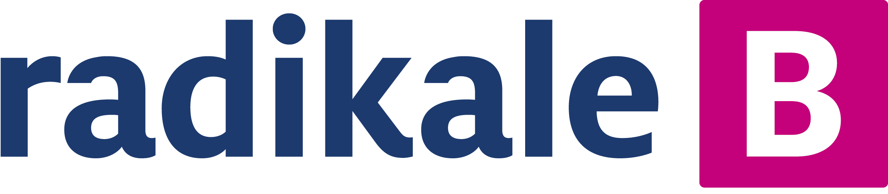
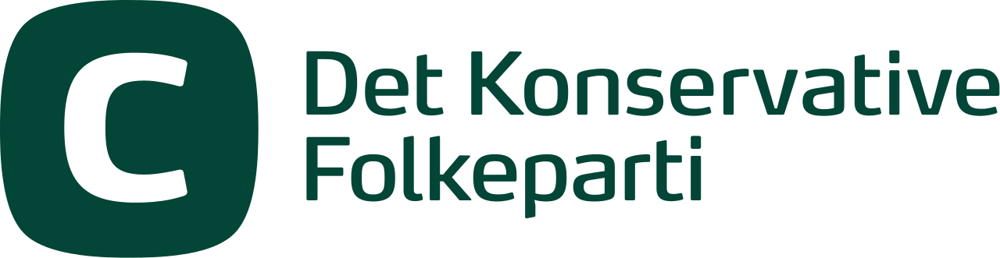
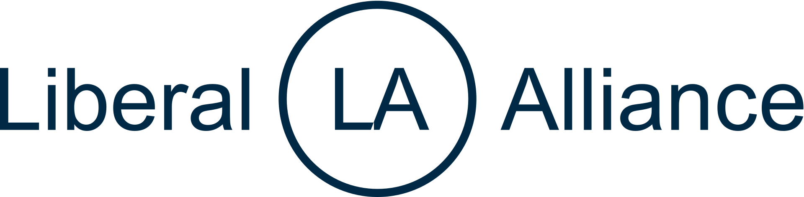
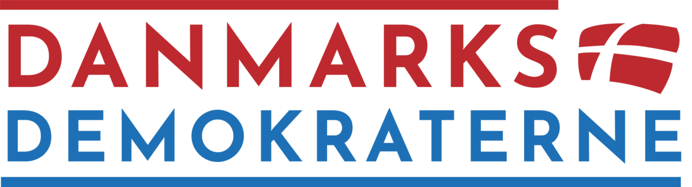
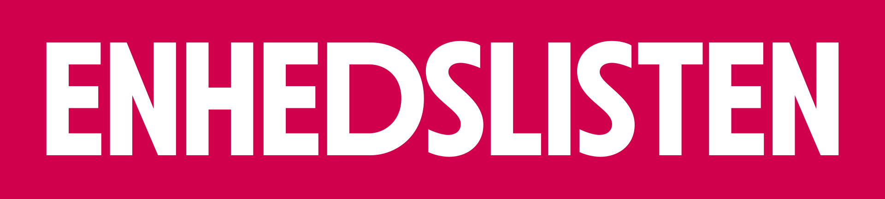

Demokratiet har godt af det, og det har du også! Tryk på ikonet for det parti du ønsker at tilmelde dig herunder, så bliver du sendt direkte ind på tilmeldingssiden for partiet.
I 1960'erne var over 550.000 danskere medlem af et politisk parti. I 2022 var dette faldet til blot 125.000, på trods af, at antallet af danskere i samme periode er steget fra 4,6 til 5,9 millioner. Dette svarer altså til et fald fra 12% af alle danskere i 1960 til 2% i 2022.
Det er altså kun 2% af den danske befolkning, der har indflydelse på, hvilke kandidater der opstilles til kommunal-, regionsråds-, folketings- og Europaparlamentsvalgene.
Dette fører til en større afstand mellem borger og politiker i det danske demokrati, hvilket i værste fald resulterer i politikerlede og apati. Der er brug for en ændring i den måde vi som vælgere og borgere engagerer os i politik.
Hvis du er som mange andre danskere, har du også på et tidspunkt ærgret dig over, at et parti, som du tidligere syntes var godt, og som du var enig med, nu har ændret holdning, eller promoveret en kandidat, som du ikke kan støtte. Mange har tendens til så at vende sig væk fra partiet, og i stedet stemme på et parti, som de heller ikke er enige med. Mange ønsker i dette tilfælde, at de bare kunne stemme på det parti og en kandidat, som de kan lide, og som deler deres holdning.
Hvis man ikke er medlem af et politisk parti, har partiet ingen chance for, at stille sådan en kandidat til rådighed for dig, og du har ingen chance for, at få indflydelse på, hvilken politik partiet fører. Partierne består af mennesker, og det er disse 2% af befolkningen som sætter 100% af den politiske dagsorden i Danmark.
I Danmark er vi engagerede og aktive under valg, og har en af de bedste valgdeltagelser i verden. Faldet i medlemmer af politiske partier indikerer dog, at vi er tilfredse med at lade andre bestemme, hvad vores valgmuligheder skal være.
Hvis du vil have medbestemmelse over dine valgmuligheder, så skal du melde dig ind i et parti. Her har du klart den bedste mulighed for indflydelse. Det gælder uanset hvor du ønsker at se den indflydelse realiseret: Lokalt, nationalt, globalt.
Du skal blande dig.
Her på siden er links til tilmeldingsblanketter for alle danske politiske partier med mandater i det danske folketing. Der findes mange andre partier. Find et du er enig med, og meld dig ind.